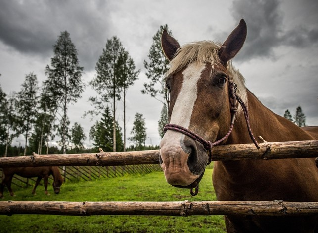

Kesäleirit
Ikimuistoinen leirikesä Puronkorvessa on monien lapsien kesän kohokohta. Luvassa on uimista, makkaranpaistoa leirinuotiolla, eläinteinhoitoa ja kavereiden kanssa lomasta nauttimista.
Leireillä majoitutaan vierastuvassa ja ruokatarjoilusta vastaa Kahvila Korvapuustin väki.
Tarkemmat lisätiedot kesän 2025 leireistä julkaistaan pian, pysy kuulolla!
